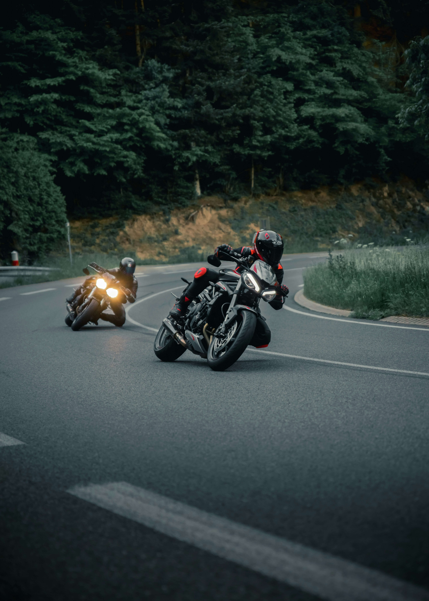
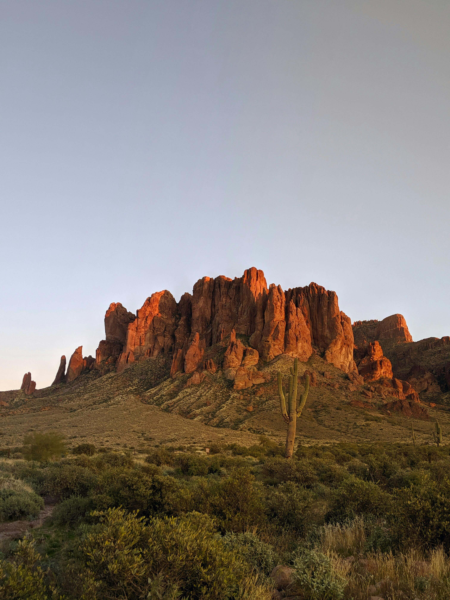
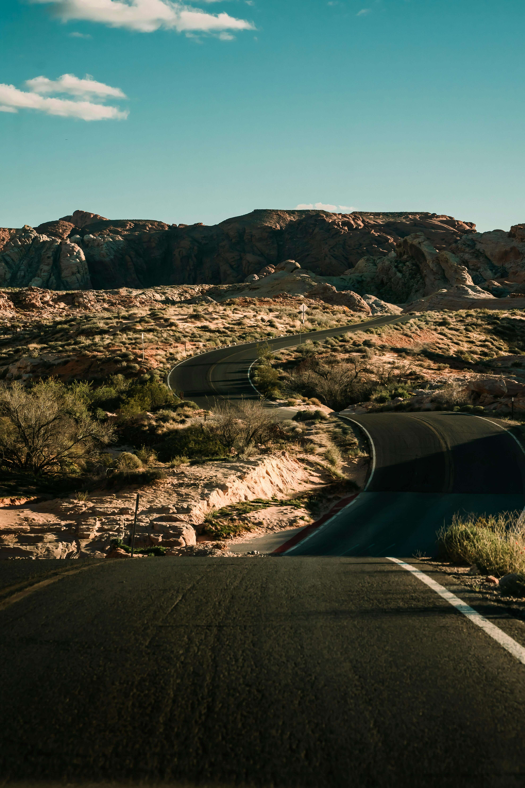
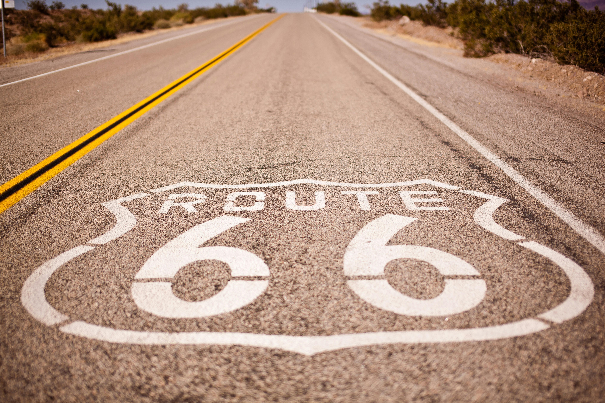
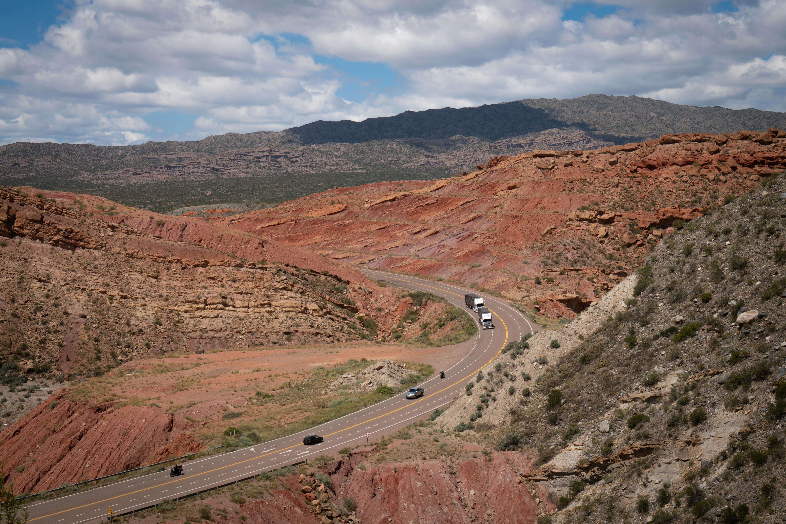
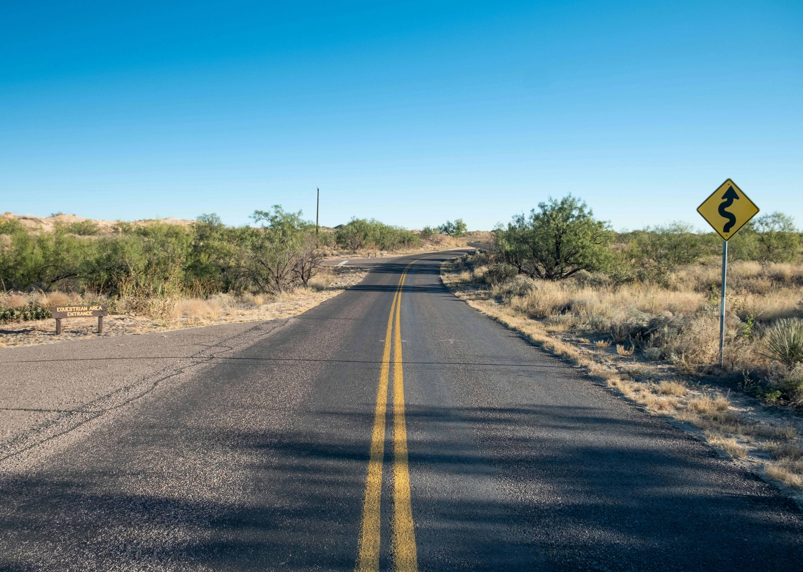
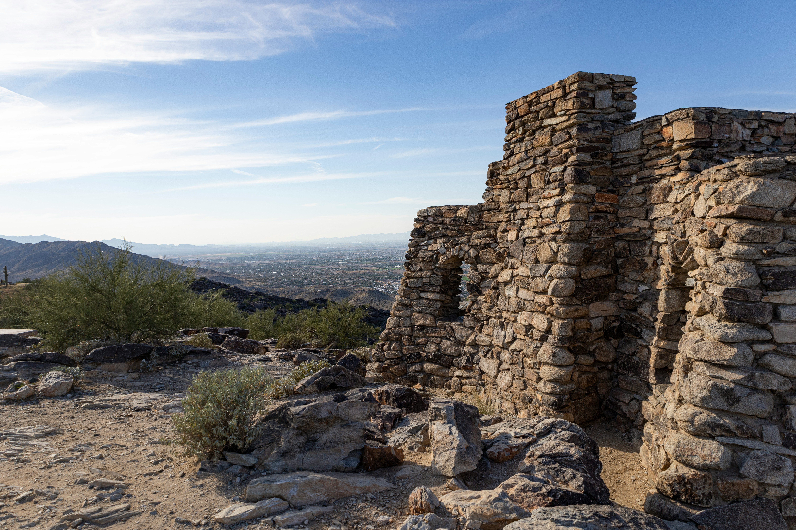

Ride Routes That Match Your Skill Level
Beginner riders should start with routes that have lighter traffic, good road conditions, and manageable curves before moving on to more technical roads.

Apache Trail (SR 88)
A popular beginner-friendly ride near Phoenix with paved, winding roads through the Superstition Mountains leading toward Canyon Lake and Tortilla Flat.

Bush Highway
A scenic and easy ride through the Tonto National Forest, following the Salt River and passing Saguaro Lake.

Route 66 (Kingman to Oatman)
A nostalgic ride through desert mountains with twisty roads and a unique stop in Oatman.

Gates Pass Loop
A short but exciting ride near Tucson with beautiful desert scenery and curves.

Wickenburg to Bagdad
A longer ride with open roads, rolling hills, and low traffic for a relaxed cruise.

South Mountain Park
A quick ride in Phoenix leading to Dobbins Lookout with amazing city views.
Get Cruising!
Pick a route, wear your gear, and cruise! With time, you'll grow more comfortable at riding, and be able to take curves and these routes more confidently.